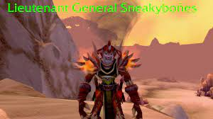
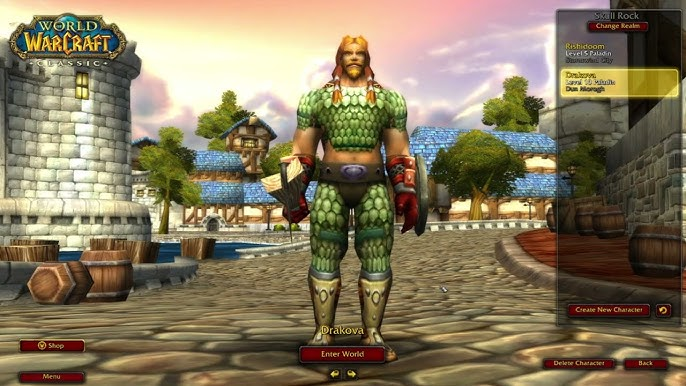

CLASES
GUERRERO
El guerrero en WOW es una clase versátil que utiliza rabia en lugar de maná o energía, destacándose como el mejor tanque del juego gracias a su capacidad para mitigar daño y generar amenaza, pero también puede ser un poderoso DPS cuerpo a cuerpo en la especialización de armas o furia. Es ideal para jugadores que disfrutan liderar en mazmorras y raids como tanque principal, o infligir gran daño físico con armas contundentes en combate directo, aunque depende mucho del equipo para maximizar su rendimiento.
MAGO
El mago en WOW es una clase de daño a distancia que se especializa en lanzar hechizos de fuego, escarcha y arcano, siendo una de las principales fuentes de DPS en grupos y bandas gracias a su alto daño en área y utilidad. Además, destaca por su versatilidad con habilidades como polimorfia para controlar enemigos, portales para viajar, y conjurar comida y agua para el grupo, siendo esencial en PvE y muy efectivo en PvP con su capacidad para kitear y sobrevivir.
CAZADOR
El cazador en WOW es una clase de daño a distancia altamente autónoma, ideal para levear y explorar gracias a su capacidad de domesticar mascotas que sirven como tanques o DPS, y a su uso de trampas y disparos para controlar enemigos. Es excelente en PvE por su daño sostenido y utilidad como la habilidad de interrumpir o ralentizar, y en PvP destaca por su capacidad de mantener la distancia y acosar a sus enemigos. Además, su economía de munición y necesidad de gestionar amenazas lo hacen único y estratégico.
BRUJO
El brujo en WOW es una clase de daño mágico a distancia que destaca por su capacidad para infligir daño sostenido con maldiciones y hechizos de daño en el tiempo (DoTs), además de invocar demonios que ofrecen utilidad y apoyo. Es excelente en PvE por su capacidad de drenar vida y maná, invocar piedras de salud para el grupo y crear portales para invocar aliados. En PvP, sobresale con su control de masas, como miedos y maldiciones debilitantes, combinados con una gran capacidad de supervivencia y daño persistente.
PICARO
El pícaro en WOW es una clase de daño cuerpo a cuerpo (DPS) que utiliza energía para ejecutar habilidades rápidas y letales, especializándose en infligir daño explosivo con combos y venenos. Es excelente en PvP por su capacidad para controlar el combate con sigilo, aturdimientos y emboscadas sorpresivas, mientras que en PvE aporta un alto DPS constante y la habilidad de desactivar trampas o abrir cerraduras. Su movilidad, sigilo y versatilidad lo convierten en un maestro del asesinato y la infiltración.
DRUIDA
El druida en WOW es una clase híbrida extremadamente versátil que puede adaptarse a casi cualquier rol: tanque (forma de oso), sanador (especialización en Restauración), DPS cuerpo a cuerpo (forma de gato) o DPS a distancia (equilibrio con hechizos de naturaleza y arcano). Aunque no sobresale como el mejor en un solo rol, su capacidad de cambio de forma y utilidades como renacer, curas, y buff de Marca de lo Salvaje lo hacen indispensable en PvE y flexible en PvP, donde puede interrumpir, kitear y sobrevivir con facilidad.
CHAMAN
El chamán en WOW es una clase híbrida exclusiva de la Horda, capaz de desempeñar roles de sanador, DPS cuerpo a cuerpo o a distancia, y de soporte gracias a sus tótems únicos que benefician al grupo con efectos como curaciones, potenciadores de daño o resistencias. Como sanador, destaca por su eficiencia con Cadena de Sanación; como DPS, puede especializarse en mejora (combate cuerpo a cuerpo con armas imbuibles) o elemental (daño mágico a distancia). En PvP, es muy versátil, con habilidades para purgar, ralentizar y sanar, combinando utilidad y buen rendimiento individual.
SACERDOTE
El sacerdote en WOW es una clase fundamentalmente dedicada al rol de sanador, destacando por su capacidad para mantener al grupo o banda con vida mediante hechizos poderosos como *Sanación en cadena* y *Palabra de poder: escudo*. También puede desempeñar el rol de DPS, especialmente en la especialización de Sombra, donde inflige daño mágico con hechizos como *Palabra de las sombras: dolor* y *Mente en blanco*. En PvP, el sacerdote es muy fuerte por su capacidad para controlar al enemigo con temores y silenciarlos, además de ser un excelente sanador en cualquier situación. Su flexibilidad lo hace esencial en casi todos los contenidos del juego.
PALADIN
El paladín en WOW es una clase híbrida exclusiva de la Alianza, que puede desempeñar roles de sanador, tanque o DPS. En su rol de tanque, es muy eficiente gracias a su alta supervivencia y habilidades como *Escudo divino* y *Exorcismo*, lo que lo convierte en un excelente defensor en mazmorras y bandas. Como sanador, ofrece curaciones poderosas y la capacidad de proteger a su grupo con bendiciones. En su rol de DPS, puede especializarse en *retribución*, infligiendo daño con una mezcla de habilidades físicas y mágicas. Su versatilidad, utilidad y capacidad para otorgar buffs lo hacen una clase muy completa en PvE y PvP.
